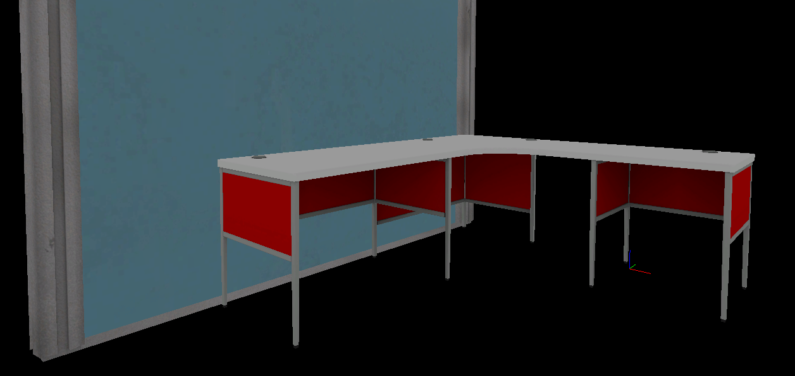
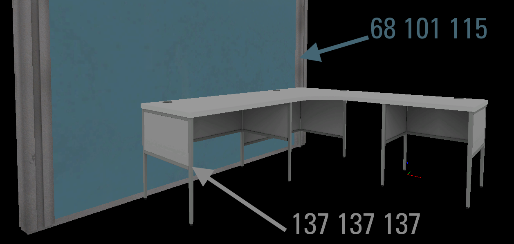
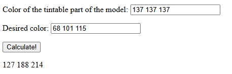
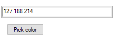
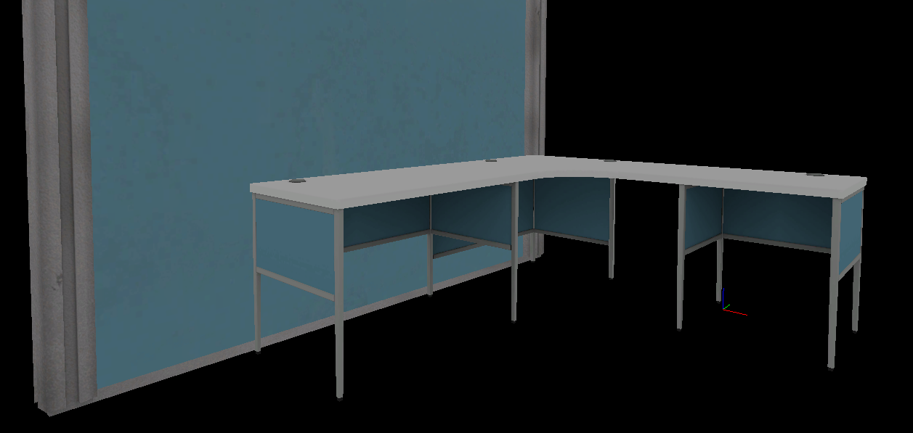

All color values are in the same format as they'd be in the Tint Color keyvalue.
Color of the tintable part of the model:
Desired color:
How to use
- Identify the colorable parts of your model (red here)

- Sample the color of your prop's tintable area and get the target color (e.g., from a screenshot)

- Type/paste both into the fields above, click Calculate, enable normalization if necessary, and copy the calculated value

- Paste this into your prop's tint color setting

- The model now matches your target color!
